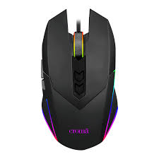

A keyboard is an input device that allows users to type letters, numbers, and symbols into a computer or other electronic device. Keyboards are usually arranged in a specific layout, such as QWERTY or DVORAK, and can differ by manufacturer and the operating system they are designed for.
A mouse is a small device that a computer user pushes across a desk surface in order to point to a place on a display screen and to select one or more actions to take from that position. The mouse first became a widely used computer tool when Apple Computer made it a standard part of the Apple Macintosh.